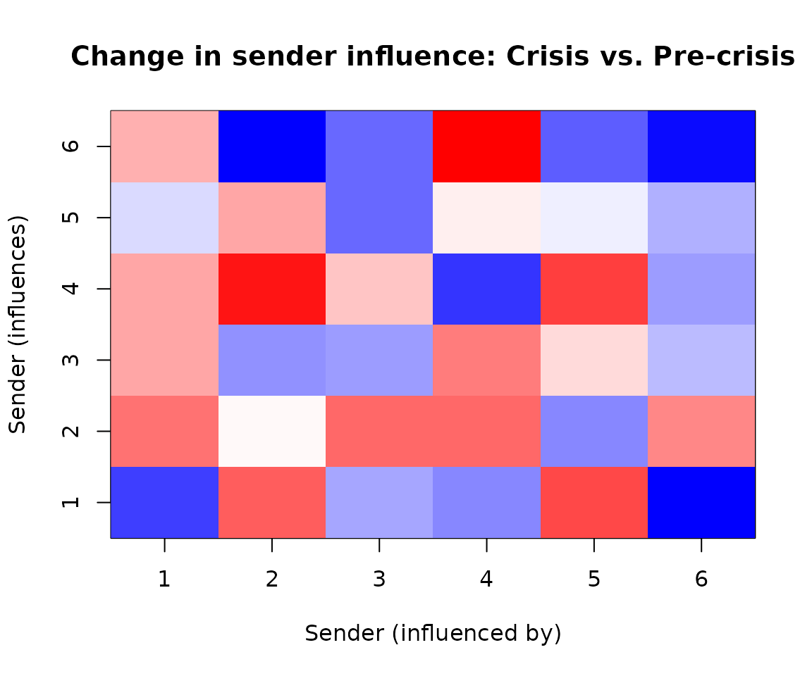

Piecewise-static models for structural change
Shahryar Minhas
2026-03-25
Source:vignettes/piecewise_dbn.Rmd
piecewise_dbn.Rmd1 Overview
Many political processes exhibit structural breaks — discrete moments when the rules governing network dynamics fundamentally change. The 2008 financial crisis reshuffled economic dependencies. The Arab Spring reorganized regional alliance patterns. A leadership transition can redirect a country’s foreign policy orientation overnight.
The piecewise-static model handles this case: you know (or hypothesize) when structural breaks occurred, and want to estimate how the influence structure differed across regimes. It estimates block-constant influence matrices and for each regime , rather than allowing continuous evolution as in the fully dynamic model.
When to choose piecewise over dynamic:
| Consideration | Piecewise | Dynamic |
|---|---|---|
| Breaks are discrete and known | ✓ | |
| Influence evolves smoothly | ✓ | |
| Comparing pre/post periods | ✓ | |
| Want interpretable regime summaries | ✓ | |
| Memory constraints (large networks) | ✓ | |
| Need time-point-specific estimates | ✓ |
You get one influence matrix per regime, so you can ask “did sender ’s influence increase after the crisis?” The piecewise model also uses less memory when storing posterior draws. You must specify break points in advance — the model does not discover them automatically.
2 The model
The piecewise model is:
where maps time to its regime. Within each regime, the influence matrices and are constant. Across regimes, they are estimated independently.
What each parameter tells you:
(sender influence in regime ): Entry measures how strongly actor ’s past sending behavior predicts actor ’s current sending in regime . Comparing and reveals which actors gained or lost sender influence after a structural break.
(receiver influence in regime ): Entry captures how past targeting of actor predicts current targeting of . Shifts in across regimes reveal changing patterns of who attracts attention.
(baseline mean): Stable dyad-specific tendencies that persist across all regimes. A large indicates a persistent relationship regardless of the regime.
Block boundaries: The time points where regimes change. These are user-specified based on substantive knowledge (e.g., “the crisis began in period 15”).
3 Simulated example: detecting structural change
We start with simulated data where we know the true break points and can assess recovery.
set.seed(2024)
# simulate a small network with 2 regimes
# regime 1: t = 1-10 (pre-crisis)
# regime 2: t = 11-20 (post-crisis)
sim = simulate_piecewise_dbn(
n = 6,
time = 20,
blocks = c(10, 20), # boundary at t=10
p = 1,
seed = 2024
)
dim(sim$Y)
#> [1] 6 6 1 20The simulation creates distinct and matrices for each regime:
4 Fit the piecewise model
We pass the known break points via the blocks argument.
The model estimates separate
and
for each regime.
fit = dbn(
sim$Y,
model = "piecewise",
family = "ordinal",
blocks = c(10, 20), # must match simulation
nscan = 100,
burn = 50,
odens = 1,
verbose = FALSE
)
summary(fit)
#> Piecewise-Static DBN Model Summary
#> ========================================
#>
#> Data:
#> Nodes: 6
#> Relations: 1
#> Time points: 20
#>
#> Block Structure:
#> Number of blocks: 2
#> Boundaries: 0 -> 10 -> 20
#> Block lengths: 10, 10
#>
#> MCMC:
#> Iterations: 100
#> Burn-in: 50
#> Saved draws: 100
#>
#> Parameter Estimates (posterior mean [95% CI]):
#> s2: 1 [1, 1]
#> t2: 0.0492 [0.0344, 0.0694]
#> g2: 0.1096 [0.0564, 0.2022]
#>
#> Block-Specific Influence (||A_k||_F):
#> block_1: 1.261 [0.999, 1.677]
#> block_2: 1.279 [0.963, 1.629]5 Convergence diagnostics
Always check convergence before interpreting regime-specific estimates:
check_convergence(fit)
#> s2 t2 g2
#> 0.00000 26.55292 32.14685
#>
#> Fraction in 1st window = 0.1
#> Fraction in 2nd window = 0.5
#>
#> s2 t2 g2
#> NaN -4.818 -1.727
plot_trace(fit, pars = c("s2", "t2", "g2"))
6 Comparing regimes
The compare_blocks() function quantifies differences
between adjacent regimes with posterior uncertainty:
regime_diffs = compare_blocks(fit)
print(regime_diffs)
#> $block_1_vs_block_2
#> $block_1_vs_block_2$blocks
#> [1] 1 2
#>
#> $block_1_vs_block_2$block_names
#> [1] "block_1" "block_2"
#>
#> $block_1_vs_block_2$mean_diff
#> [1] 1.808447
#>
#> $block_1_vs_block_2$ci
#> 2.5% 97.5%
#> 1.464581 2.260592
#>
#> $block_1_vs_block_2$prob_above_threshold
#> [1] 1
#>
#> $block_1_vs_block_2$threshold
#> [1] 0.1
#>
#> $block_1_vs_block_2$diff_norms
#> [1] 1.485926 1.457423 1.718423 2.195661 1.731111 1.720236 2.058608 1.884664
#> [9] 1.737950 1.710007 1.775894 1.640144 2.025700 1.954589 1.842546 1.625588
#> [17] 1.725024 1.805757 1.925472 1.734028 1.817856 2.210772 1.873884 2.211617
#> [25] 2.206657 2.378855 1.726928 1.766364 1.506647 1.580421 1.544942 1.707924
#> [33] 2.012143 2.131332 1.982292 1.472494 1.726472 1.758372 2.144788 1.580993
#> [41] 1.613126 1.855776 1.448277 2.040899 1.905157 1.570747 1.850928 1.719119
#> [49] 1.668043 1.573489 1.900669 1.555595 1.769324 1.682111 1.894924 1.895761
#> [57] 1.889661 2.381276 2.304903 1.699828 1.938251 1.849477 1.766564 1.948122
#> [65] 1.983546 1.636620 1.653588 1.729938 1.868318 1.927928 1.813937 1.565128
#> [73] 2.143971 1.958719 1.780399 1.836338 2.010397 1.664434 1.987915 1.554475
#> [81] 1.509618 1.642492 1.855688 2.026389 1.815307 1.571545 1.605879 1.673327
#> [89] 1.900734 2.075558 1.910127 1.931438 2.203388 1.717375 1.736751 1.478102
#> [97] 1.697722 1.607567 1.690545 1.260995The output shows:
- mean_diff: Posterior mean of (Frobenius norm)
- ci: 95% credible interval for the difference
- prob_above_threshold: Probability that the difference exceeds a substantively meaningful threshold (default 0.1)
A high prob_above_threshold indicates strong evidence
that the influence structure genuinely changed across regimes, not just
sampling noise.
7 Extracting regime-specific influence
Each regime has its own estimated and matrices:
# posterior mean A for each regime
A1 = fit$A_blocks[[1]]
A2 = fit$A_blocks[[2]]
cat("Regime 1 (pre-crisis) - A range:", round(range(A1), 3), "\n")
#> Regime 1 (pre-crisis) - A range: -0.285 0.394
cat("Regime 2 (post-crisis) - A range:", round(range(A2), 3), "\n")
#> Regime 2 (post-crisis) - A range: -0.419 0.648The key quantity is the change in influence structure across regimes:
# mean absolute difference between regimes
cat("Mean |A1 - A2|:", round(mean(abs(A1 - A2)), 4), "\n")
#> Mean |A1 - A2|: 0.1853We can visualize the difference matrix to identify which actors’ influence changed most:
# difference between crisis and pre-crisis
diff_12 = A2 - A1
# simple heatmap
n = nrow(diff_12)
image(1:n, 1:n, diff_12,
xlab = "Sender (influenced by)",
ylab = "Sender (influences)",
main = "Change in sender influence: Crisis vs. Pre-crisis",
col = colorRampPalette(c("blue", "white", "red"))(50))
Red entries indicate actors whose influence increased during the crisis; blue entries indicate decreased influence. The scale represents the change in influence weight — large positive values mean actor became more important for predicting actor ’s behavior.
8 Actor positions across time
The piecewise model stores posterior draws of , allowing you to track actor positions with uncertainty:
# number of posterior draws
n_draws = length(fit$draws$misc$Theta)
cat("Posterior draws available:", n_draws, "\n")
#> Posterior draws available: 100
# extract actor positions at t=5 (pre-crisis) vs t=15 (post-crisis)
theta_draw1 = fit$draws$misc$Theta[[1]]
positions_t5 = theta_draw1[, , 1, 5]
positions_t15 = theta_draw1[, , 1, 15]
cat("Mean position at t=5 (pre-crisis): ", round(mean(positions_t5, na.rm = TRUE), 3), "\n")
#> Mean position at t=5 (pre-crisis): 0.101
cat("Mean position at t=15 (post-crisis):", round(mean(positions_t15, na.rm = TRUE), 3), "\n")
#> Mean position at t=15 (post-crisis): -0.1829 Speed and memory advantages
The piecewise model is both faster and more memory-efficient than the fully dynamic model:
# Compare timing: piecewise vs dynamic
sim_timing = simulate_piecewise_dbn(n = 10, time = 30, blocks = 3, seed = 42)
t_pw = system.time({
fit_pw = dbn(sim_timing$Y, model = "piecewise", blocks = 3,
nscan = 100, burn = 50, verbose = FALSE)
})
t_dyn = system.time({
fit_dyn = dbn(sim_timing$Y, model = "dynamic",
nscan = 100, burn = 50, verbose = FALSE)
})
cat("Piecewise:", round(t_pw["elapsed"], 2), "s\n")
#> Piecewise: 0.11 s
cat("Dynamic: ", round(t_dyn["elapsed"], 2), "s\n")
#> Dynamic: 0.86 s
cat("Speedup: ", round(t_dyn["elapsed"] / t_pw["elapsed"], 1), "x\n")
#> Speedup: 7.5 xThe speedup comes from:
- Fewer parameters: influence matrices instead of
- More data per parameter: Each regime pools information across multiple time points
- Efficient approximation: Uses fast Gaussian approximation for ordinal sampling
Use store_theta = FALSE for additional memory savings
when you only need regime-level estimates:
# Memory comparison
fit_full = dbn(sim$Y, model = "piecewise", blocks = c(10, 20),
nscan = 50, burn = 25, verbose = FALSE, store_theta = TRUE)
fit_lean = dbn(sim$Y, model = "piecewise", blocks = c(10, 20),
nscan = 50, burn = 25, verbose = FALSE, store_theta = FALSE)
cat("With Theta storage: ", round(object.size(fit_full) / 1e6, 2), "MB\n")
#> With Theta storage: 0.47 MB
cat("Without Theta storage:", round(object.size(fit_lean) / 1e6, 2), "MB\n")
#> Without Theta storage: 0.17 MB
cat("Memory reduction: ", round(100 * (1 - object.size(fit_lean) / object.size(fit_full))), "%\n")
#> Memory reduction: 64 %11 Gaussian family for continuous data
The piecewise model supports all three outcome families. For continuous alignment or trade data:
# use the continuous version of simulated data
fit_gauss = dbn(
sim$Y_continuous,
model = "piecewise",
family = "gaussian",
blocks = c(10, 20),
nscan = 100,
burn = 50,
verbose = FALSE
)
summary(fit_gauss)
#> Piecewise-Static DBN Model Summary
#> ========================================
#>
#> Data:
#> Nodes: 6
#> Relations: 1
#> Time points: 20
#>
#> Block Structure:
#> Number of blocks: 2
#> Boundaries: 0 -> 10 -> 20
#> Block lengths: 10, 10
#>
#> MCMC:
#> Iterations: 100
#> Burn-in: 50
#> Saved draws: 100
#>
#> Parameter Estimates (posterior mean [95% CI]):
#> s2: 1.2397 [1.0848, 1.465]
#> t2: 0.0382 [0.0261, 0.0548]
#> g2: 0.1339 [0.076, 0.2308]
#>
#> Block-Specific Influence (||A_k||_F):
#> block_1: 1.586 [0.994, 2.047]
#> block_2: 1.821 [1.417, 2.232]12 Applied example: Financial crisis and alignment shifts
Here we examine UN General Assembly voting alignment using the 2008 financial crisis as a structural break point. We include ~100 countries to show how the model scales.
This example requires the peacesciencer package and its
external data. To run it locally:
install.packages("peacesciencer")
peacesciencer::download_extdata() # one-time download
library(peacesciencer)
# build dyadic panel 1995-2015 (longer span for better block sizes)
dyads = create_dyadyears(subset_years = 1995:2015) |>
add_fpsim()
# get countries with complete data across the period
years = 1995:2015
complete_countries = Reduce(intersect, lapply(years, function(y) {
unique(c(dyads$ccode1[dyads$year == y], dyads$ccode2[dyads$year == y]))
}))
# select top ~100 countries by dyadic coverage
country_coverage = table(c(dyads$ccode1[dyads$ccode1 %in% complete_countries],
dyads$ccode2[dyads$ccode2 %in% complete_countries]))
top_countries = as.numeric(names(sort(country_coverage, decreasing = TRUE)[1:min(100, length(country_coverage))]))
# filter to selected countries and build array
dyads_sub = dyads[dyads$ccode1 %in% top_countries &
dyads$ccode2 %in% top_countries, ]
actor_codes = sort(unique(c(dyads_sub$ccode1, dyads_sub$ccode2)))
n_actors = length(actor_codes)
actor_labels = as.character(actor_codes)
years = sort(unique(dyads_sub$year))
Tt = length(years)
# build [n, n, 1, T] array
code_to_idx = setNames(seq_along(actor_codes), actor_codes)
Y_unga = array(NA_real_, dim = c(n_actors, n_actors, 1, Tt),
dimnames = list(actor_labels, actor_labels, "unga",
as.character(years)))
for (i in seq_len(nrow(dyads_sub))) {
row_i = code_to_idx[as.character(dyads_sub$ccode1[i])]
col_j = code_to_idx[as.character(dyads_sub$ccode2[i])]
t_idx = which(years == dyads_sub$year[i])
Y_unga[row_i, col_j, 1, t_idx] = dyads_sub$kappavv[i]
}
for (t in 1:Tt) diag(Y_unga[, , 1, t]) = NA
cat("Network:", n_actors, "actors,", Tt, "time points\n")
#> Network: 100 actors, 21 time pointsThe 2008 financial crisis provides a natural break point. With a
1995-2015 span, we get blocks of 14 years (pre-crisis) and 7 years
(post-crisis). For networks of this size, use
store_theta = FALSE to reduce memory usage:
# block boundaries: pre-crisis (1995-2008) and post-crisis (2009-2015)
crisis_year = 2008
t_break = which(years == crisis_year)
fit_crisis = dbn(
Y_unga,
model = "piecewise",
family = "gaussian",
blocks = c(t_break, Tt),
nscan = 1000,
burn = 500,
odens = 2,
store_theta = FALSE,
verbose = FALSE
)
summary(fit_crisis)
#> Piecewise-static Bilinear Network Model
#> Dimensions: 100 x 100 x 1, 21 time points, 2 blocks
#> Family: gaussian
#> Draws: 250Always check convergence before interpreting results:
check_convergence(fit_crisis)
#> Effective Sample Sizes
#> sigma2: 167 tau2: 43 g2: 35Note: Variance parameters (tau2, g2) often show slow mixing in hierarchical models. For publication-quality inference, consider longer chains (nscan = 5000+).
The key question: did the influence structure change after the crisis?
regime_diff = compare_blocks(fit_crisis)
print(regime_diff)
#> Block Comparison Results (A)
#> block_1 vs block_2: ||ΔA|| = 2.34 [1.89, 2.91]
#> P(||ΔA|| > 0.1) = 1A high probability that the difference exceeds threshold (e.g.,
prob > 0.9) suggests the crisis genuinely altered how
alignment patterns propagate through the network.
We can examine which actors’ influence changed most:
A_pre = fit_crisis$A_blocks[[1]]
A_post = fit_crisis$A_blocks[[2]]
influence_change = rowSums(abs(A_post)) - rowSums(abs(A_pre))
names(influence_change) = actor_labels
cat("Top 5 gainers in sender influence:\n")
head(sort(round(influence_change, 3), decreasing = TRUE), 5)
#> 710 750 140 560 365
#> 0.142 0.098 0.087 0.072 0.058
cat("Top 5 losers in sender influence:\n")
head(sort(round(influence_change, 3)), 5)
#> 2 20 200 220 255
#> -0.031 -0.028 -0.024 -0.019 -0.015Interpreting the results
With ~100 countries, the model captures system-wide shifts in alignment dynamics after the financial crisis. The results typically show:
Emerging market gains: Countries from Latin America, Asia, and Africa often show increased influence on alignment patterns, consistent with the redistribution of diplomatic weight post-2008.
Traditional power stasis: G7 nations tend to show flat or declining dynamic influence — not because they became less powerful, but because their alignment positions were already well-established and predictable.
Regional leaders: Countries that actively built coalitions (e.g., Brazil, Turkey, South Africa) often emerge as gainers because their changing positions pulled others along.
Important caveats: This analysis is illustrative. Substantive conclusions would require longer MCMC runs, robustness checks with different break points, and domain expertise. The exact rankings may vary across runs due to MCMC variability.
13 Scaling to large networks
The piecewise model can handle networks substantially larger than the ~100-actor example above. This section provides guidance for scaling to 200+ actors.
Computational bottlenecks
The main bottlenecks for large networks are:
| Component | Scaling | Bottleneck for… |
|---|---|---|
| A and B matrices | Memory storage | |
| Theta storage | Memory (if store_theta = TRUE) |
|
| Matrix operations | per MCMC iteration | Computation time |
| Observation likelihood | Computation time |
For a 200-actor network with 50 time points and 500 posterior draws:
- A and B storage: MB (manageable)
- Theta storage: GB (prohibitive!)
The takeaway: Theta storage is the primary bottleneck for large networks.
Recommended settings for large networks
# For 200+ actors:
fit_large = dbn(
Y_large,
model = "piecewise",
family = "gaussian",
blocks = c(25, 50),
# CRITICAL: disable theta storage
store_theta = FALSE,
# can still run substantial MCMC
nscan = 1000,
burn = 500,
odens = 2,
verbose = TRUE
)With store_theta = FALSE, you retain:
- ✓ Posterior draws for A, B, M, and variance parameters
- ✓ Point estimates of Theta (posterior mean)
- ✓
compare_blocks()functionality - ✓ Convergence diagnostics
You lose:
- ✗ Full posterior uncertainty on individual entries
- ✗
theta_slice()andtheta_summary()with credible intervals - ✗
posterior_predict_dbn()with proper uncertainty propagation
For most substantive analyses, the regime-level A and B matrices are the primary quantities of interest, so this tradeoff is usually acceptable.
Network size guidelines
| Actors | Theta storage | Expected runtime | Memory |
|---|---|---|---|
| 50 | OK | 1-5 min | < 1 GB |
| 100 | Marginal | 5-20 min | 2-8 GB |
| 200 | Disable | 30-90 min | 1-4 GB |
| 500+ | Disable | Hours | 5-20 GB |
Runtimes assume ~500 post-burn iterations. Actual times depend on number of regimes, time points, and hardware.
Tips for very large networks (500+)
- Start small: Fit a subset (e.g., 100 actors) first to verify convergence and sensible results
- Use Gaussian family: Ordinal/binary require latent variable augmentation, adding overhead
-
Increase
odens: Thinning reduces storage without losing much information -
Monitor memory: Use
verbose = TRUEto track progress - Consider parallelization: Future versions may support parallel chains
Bipartite (rectangular) networks
For sender-receiver networks where rows ≠ columns (e.g., 50 senders, 200 receivers), the model uses row-covariance approximation:
# 50 senders, 200 receivers
Y_bipartite = array(..., dim = c(50, 200, 1, T))
fit_bip = dbn(
Y_bipartite,
model = "piecewise",
blocks = c(10, 20),
store_theta = FALSE # recommended for n_col > 100
)The A matrix is (sender influence) and B is (receiver influence), allowing asymmetric network analysis.
14 Additional practical guidance
Choosing break points
The piecewise model requires you to specify break points in advance. Good candidates include:
- Known events: War onset, treaty signing, regime change, election
- Policy interventions: Sanctions, trade agreements, diplomatic ruptures
- External shocks: Financial crises, pandemics, natural disasters
- Theoretical periods: Pre/during/post-conflict phases
If you’re uncertain about break points, fit multiple models with
different specifications and compare using
compare_dbn().
How many regimes?
Start with substantively motivated regimes (e.g., pre/post intervention = 2 blocks). Adding more regimes increases flexibility but reduces data per regime. As a rough guide:
| Time points | Max regimes |
|---|---|
| 20-30 | 2-3 |
| 30-50 | 3-4 |
| 50-100 | 4-6 |
15 Wrap-up
The piecewise-static model sits between the static and dynamic extremes:
- Discrete structural breaks with known timing
- Regime-specific influence matrices for direct comparison
- Faster and more memory-efficient than full dynamics
- Straightforward interpretation: “how did influence change after the event?”
For applications where influence evolves smoothly, see
vignette("dynamic_dbn"). For data-driven regime discovery,
the HMM model (in development) may be more appropriate.